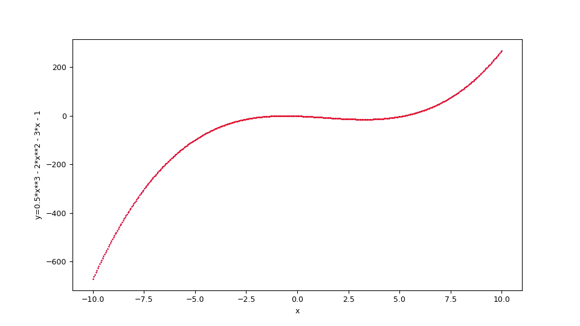
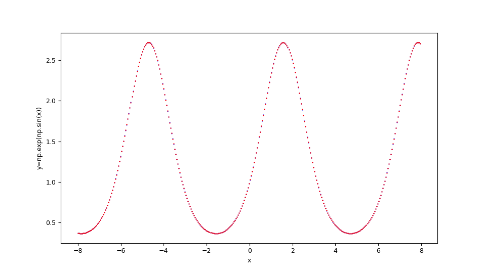

Approssimazione di funzioni tramite PyCaret
Questo post tratta l'approssimazione di funzioni matematiche reali scalari a una o più variabili reali tramite PyCaret senza scrivere codice ma agendo solo sulla linea di comando di script Python che implementano le funzionalità di:
- Configurazione di parametri generali del regressore di PyCaret e addestramento
- Predizione e calcolo dell'errore
Per quanto riguarda la generazione dei dataset sintetici di training e di test si farà uso dei seguenti strumenti (presenti nel repository):
-
fx_gen.pyper le funzioni generatrici scalari reali di una variabile reale $f(x) \colon [a,b] \to {\rm I\!R}$ -
fxy_gen.pyper le funzioni generatrici scalari reali di due variabili reali $f(x,y) \colon [a,b] \times [c,d] \to {\rm I\!R}$
-
fx_scatter.pyper le funzioni scalari reali di una variabile reale -
fxy_scatter.pyper le funzioni scalari reali di due variabili reali
Configurazione di parametri generali del regressore di PyCaret e addestramento
In questo capitolo viene presentato il programma: fit_func.py
che implementa in sequenza cinque chiamate ad altrettante funzioni della libreria PyCaret:
-
regression.setupche inizializza l'ambiente di addestramento e crea la pipeline di trasformazione. -
regression.compare_modelsche addestra e valuta le performance di tutti gli estimatori disponibili nella libreria dei modelli utilizzando la validazione incrociata.
Nota:compare_modelsin generale restituisce una griglia di punteggi medi dei vari estimatori convalidati in modo incrociato; il programmafit_func.pycomunque utilizzerà l'estimatore che ha performato meglio, cioè quello che sta nella prima riga della griglia. -
regression.tune_modelche mette a punto gli iperparametri di un dato estimatore; il programmafit_func.pyapplicheràtune_modelsul migliore estimatore trovato dacompare_modelsal punto precedente. -
regression.finalize_modelche addestra un dato estimatore sull'intero set di dati; il programmafit_func.pyapplicheràfinalize_modelall'estimatore restituitotune_modelal punto precedente. -
regression.save_modelsalva la pipeline di trasformazione e l'oggetto modello addestrato su un file in formato pickle per l'uso successivo da parte dipredict_func.py.
Infatti tramite l'argomento
--setupparams l'utente passa una serie di iperparametri per configurare la regressione di PyCaret
e tramite l'argomento --compareparams invece l'utente passa una serie di iperparametri alla comparazione tra gli algoritmi effettuata da PyCaret.
Oltre agli iperparametri della libreria PyCaret sottostante, il programma supporta dei propri argomenti per consentire all'utente di passare
il dataset di training e il file ove salvare il modello addestrato.Il programmi ` di tipo M.I.S.O., cioè Multiple Input Simple Output: è progettato per approssimare una funzione della forma $f \colon \rm I\!R^n \to \rm I\!R$.
Il formato dei dataset in ingresso è in formato csv (con header); una di queste colonne (indicata tramite un argomento obbligatorio della lina di comando) è la colonna target (quella relativa alla variabile dipendente) mentre tutte le altre colonne contengono i valori delle variabili indipendenti.
Usage del programma fit_func.py
Per ottenere l'usage del programma è sufficiente eseguire il seguente comando:
$ python fit_func.py --helpusage: fit_func.py [-h] [--version] --trainds TRAIN_DATASET_FILENAME
--targetcol TARGET_COLUMN --modelout MODEL_FILE
[--metric METRIC] [--setupparams SETUP_PARAMS]
[--compareparams COMPARE_PARAMS]
fit_func.py fits a multiple-input single-output function dataset using the
best regressor chosen by PyCaret
optional arguments:
-h, --help show this help message and exit
--version show program's version number and exit
--trainds TRAIN_DATASET_FILENAME
Train dataset file (csv format)
--targetcol TARGET_COLUMN
Target column name
--modelout MODEL_FILE
Output model file
--metric METRIC metric to evaluate the best model
--setupparams SETUP_PARAMS
Parameters of PyCaret regression.setup function
--compareparams COMPARE_PARAMS
Parameters of PyCaret regression.compare_models
function-
-h, --help: mostra l'usage del programma e termina l'esecuzione.
-
--version: mostra la versione del programma e termina l'esecuzione.
-
--trainds: percorso (relativo o assoluto) del file csv (con header) che contiene il dataset da utilizzare per il training;
questo file può essere generato in modo sintetico ad esempio tramite uno dei programmi di cui sopra
oppure essere un dataset del mondo reale che mappa $n$ variabili indipendenti su $1$ variabile dipendente.
-
--targetcol: nome della colonna che rappresenta la variabile dipendente.
-
--modelout: percorso (relativo o assoluto) al file dove salvare il modello addestrato nel formato pickle.
-
--metric: la metrica da utilizzare nell'ordinamento della griglia dei punteggi.
I valori ammessi sono: MAE, MSE, RMSE, R2, RMSLE, MAPE; il default è R2.
-
--setupparams:
lista di parametri da passare alla funzione
regression.setupsottostante; si veda la documentazione diregression.setup.
-
--compareparams:
lista di parametri da passare alla funzione
regression.compare_modelssottostante; si veda la documentazione diregression.compare_models
Predizione e calcolo dell'errore
In questo capitolo viene invece presentato il programma predict_func.py
il cui scopo è quello di effettuare le predizioni su un dataset di test applicandolo al modello precedentemente selezionato e addestrato da PyCaret tramite
il programma fit_func.py
sempre senza dover scrivere codice ma tramite la sola linea di comando.
Infatti tale programma supporta argomenti tramite i quali l'utente passa il modello selezionato e addestrato precentemente, il dataset di test
e le misure di errore da calcolare tra la predizione e il valore vero.
Il formato dei dataset di test in ingresso è identico a quello del programma di training di cui sopra; ovviamente qui la colonna target
(quella della variabile dipendente) è adoperata solo per confrontare i valori predetti con i valori veri calcolando le misure di errore passate.
Usage del programma predict_func.py
Per ottenere l'usage del programma è sufficiente eseguire il seguente comando:
$ python predict_func.py --helpusage: predict_func.py [-h] [--version] --model MODEL_FILE --ds DF_PREDICTION
--targetcol TARGET_COLUMN --predictionout
PREDICTION_DATA_FILE
[--measures MEASURES [MEASURES ...]]
predict_func.py makes prediction of the values of a multiple-input single-
output function with the best pretrained regressor chosen by PyCaret
optional arguments:
-h, --help show this help message and exit
--version show program's version number and exit
--model MODEL_FILE model file
--ds DF_PREDICTION dataset file (csv format)
--targetcol TARGET_COLUMN
Target column name
--predictionout PREDICTION_DATA_FILE
prediction data file (csv format)
--measures MEASURES [MEASURES ...]
List of built-in sklearn regression measures to
compare prediction with input dataset-
-h, --help: mostra l'usage del programma e termina l'esecuzione.
-
--version: mostra la versione del programma e termina l'esecuzione.
-
--model: percorso (relativo o assoluto) al file nel formato pickle del modello selezionato e addestrato da PyCaret e generato dal programma di training sopra descritto.
-
--ds: percorso (relativo o assoluto) del file csv (con header) che contiene il dataset di input su cui calcolare la predizione.
-
--targetcol: nome della colonna che rappresenta la variabile dipendente.
-
--predictionout: percorso (relativo o assoluto) del file csv da generare che conterrà la predizione, ovverosia l'approssimazione della funzione applicata al dataset di input.
-
--measures: lista di misure da calcolare confrontando i valori veri del dataset di input e i valori predetti in uscita;
la lista delle metriche supportate è definita in SciKit Learn Regression Metrics.
Esempi di approssimazione di funzione scalare reale di una variabile reale
Esempio #1
Si supponga di voler approssimare nell'intervallo $[-10,10]$ la seguente funzione $$f(x)=\frac {1}{2} x^3 - 2 x^2 - 3 x - 1$$ Questa si traduce in sintassi lambda body Python così:
0.5*x**3 - 2*x**2 - 3*x - 1fx_gen.py,
si esegua quindi il seguente comando:
$ python fx_gen.py \
--dsout mytrain.csv \
--funcx "0.5*x**3 - 2*x**2 - 3*x - 1" \
--xbegin -10.0 \
--xend 10.0 \
--xstep 0.01$ python fx_gen.py \
--dsout mytest.csv \
--funcx "0.5*x**3 - 2*x**2 - 3*x - 1" \
--xbegin -10.0 \
--xend 10.0 \
--xstep 0.0475A questo si intende effettuare una regressione tramite
fit_func.py
passando al regressore sottostante i seguenti argomenti: 'train_size': 0.8, 'session_id': 987654321, 'log_experiment': True, 'experiment_name': 'example1_pycaret';
quindi si esegua quindi il seguente comando:
$ python fit_func.py \
--trainds mytrain.csv \
--targetcol y \
--metric MAE \
--modelout mymodel.pickle \
--setupparams "'train_size': 0.8, 'session_id': 987654321,
'log_experiment': True, 'experiment_name': 'example1_pycaret'"Adesso si intende effettuare la predizione e il calcolo dell'errore usando le misure mean_absolute_error e mean_squared_error tramite
predict_func.py;
quindi si esegua quindi il seguente comando:
$ python predict_func.py \
--model mymodel.pickle \
--ds mytest.csv \
--targetcol y \
--predictionout mypred.csv \
--measures mean_absolute_error mean_squared_error--measures
e sono molto basse: la prima intorno a $0.0161$ e la seconda intorno a $0.002$Infine si intende effettuare la visualizzazione comparata del dataset di test con la predizione tramite
fx_scatter.py;
si esegua perciò il seguente comando:
$ python fx_scatter.py \
--ds mytest.csv \
--prediction mypred.csv \
--xlabel "x" \
--ylabel "y=1/2 x^3 - 2x^2 - 3x - 1"
Figura con grafici a dispersione che mostra l'approssimazione in sovraimpressione in rosso della funzione
$f(x)=\frac {1}{2} x^3 - 2 x^2 - 3 x - 1$ e la funzione originale sottostante in blu.
$f(x)=\frac {1}{2} x^3 - 2 x^2 - 3 x - 1$ e la funzione originale sottostante in blu.
Lo script shell di questo esempio (che mostra l'uso in cascata di questi programmi) al seguente url:
one-variable-function/pycaret/examples/example1.sh.
Esempio #2
Si supponga di voler approssimare nell'intervallo $[-6,6]$ la seguente funzione $$f(x)=\sin x $$ Tenendo presente che np è l'alias della libreria NumPy, questa si traduce in sintassi lambda body Python così:
np.sin(x)Figura con grafici a dispersione che mostra l'approssimazione in sovraimpressione in rosso della funzione
$f(x)=\sin x $ e la funzione originale sottostante in blu.
$f(x)=\sin x $ e la funzione originale sottostante in blu.
Lo script shell di questo esempio (che mostra l'uso in cascata di questi programmi) al seguente url:
one-variable-function/pycaret/examples/example2.sh.
Esempio #3
Si supponga di voler approssimare nell'intervallo $[-8,8]$ la seguente funzione $$f(x)=e^{\sin x}$$ Tenendo presente che np è l'alias della libreria NumPy, questa si traduce in sintassi lambda body Python così:
np.exp(np.sin(x))
Figura con grafici a dispersione che mostra l'approssimazione in sovraimpressione in rosso della funzione
$f(x)=e^{\sin x}$ e la funzione originale sottostante in blu.
$f(x)=e^{\sin x}$ e la funzione originale sottostante in blu.
Lo script shell di questo esempio (che mostra l'uso in cascata di questi programmi) al seguente url:
one-variable-function/pycaret/examples/example3.sh.
Citazioni
@ManualPyCaret,
author = {Moez Ali},
title = {PyCaret: An open source, low-code machine learning library in Python},
year = {2020},
month = {April},
note = {PyCaret version 1.0.0},
url = {https://www.pycaret.org}
Download del codice completo
Il codice completo è disponibile su GitHub.
Questo materiale è distribuito su licenza MIT; sentiti libero di usare, condividere, "forkare" e adattare tale materiale come credi.
Sentiti anche libero di pubblicare pull-request e bug-report su questo repository di GitHub oppure di contattarmi sui miei canali social disponibili nell'angolo in alto a destra di questa pagina.